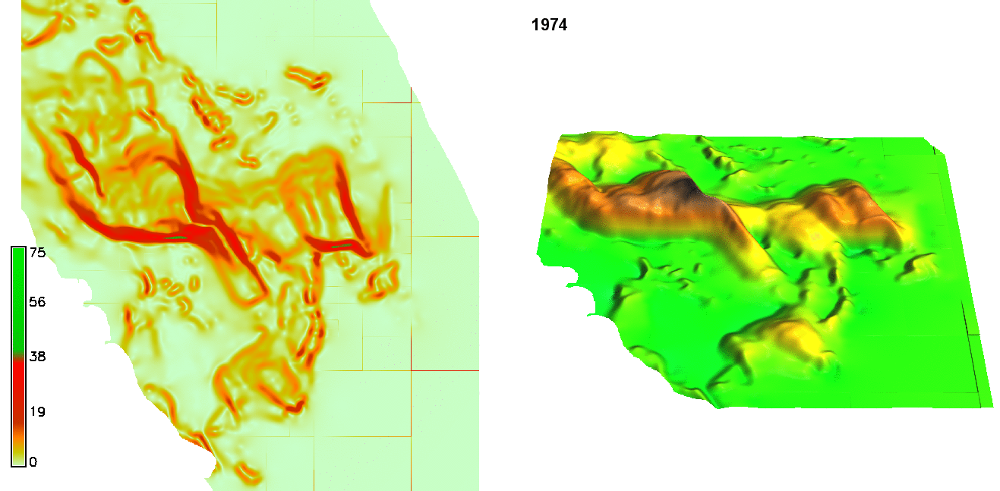
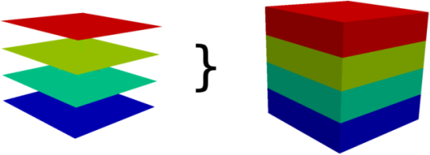
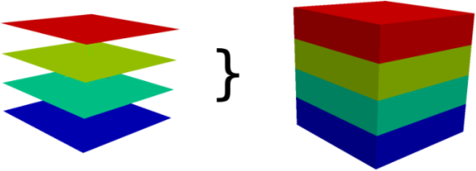
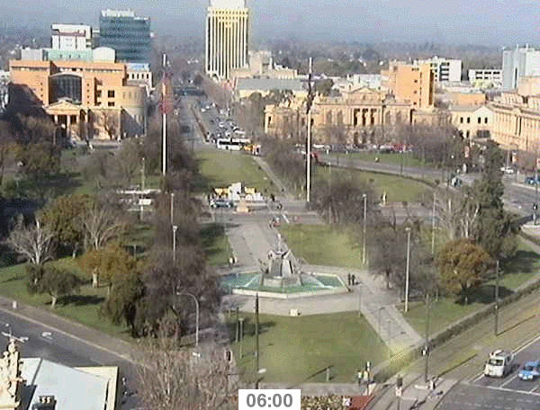
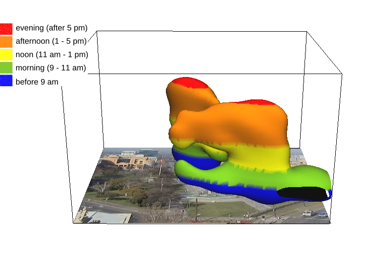
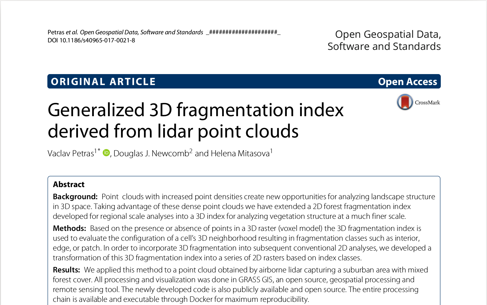
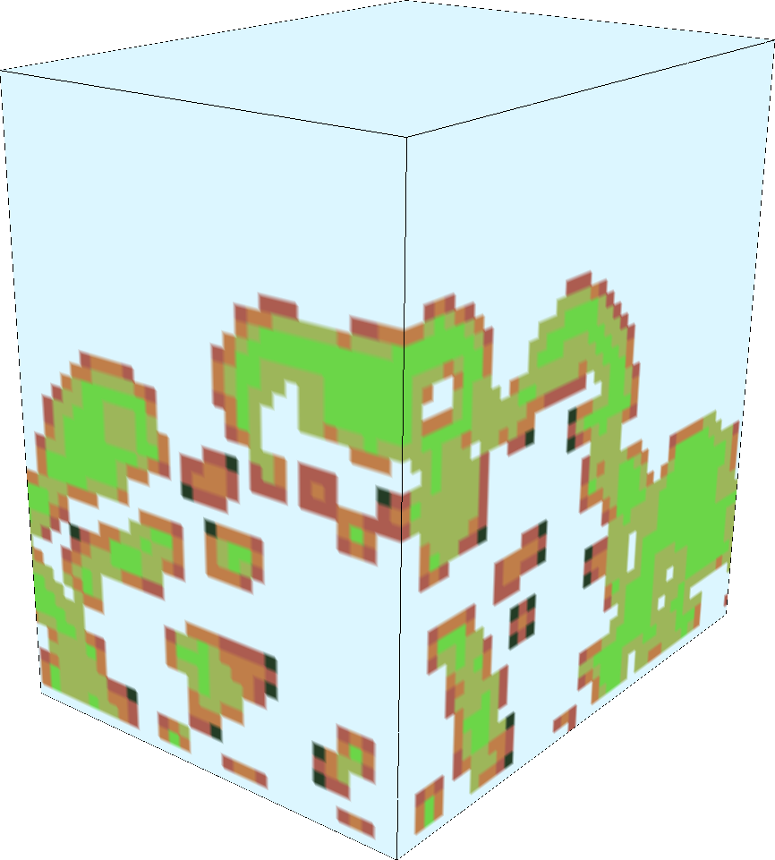
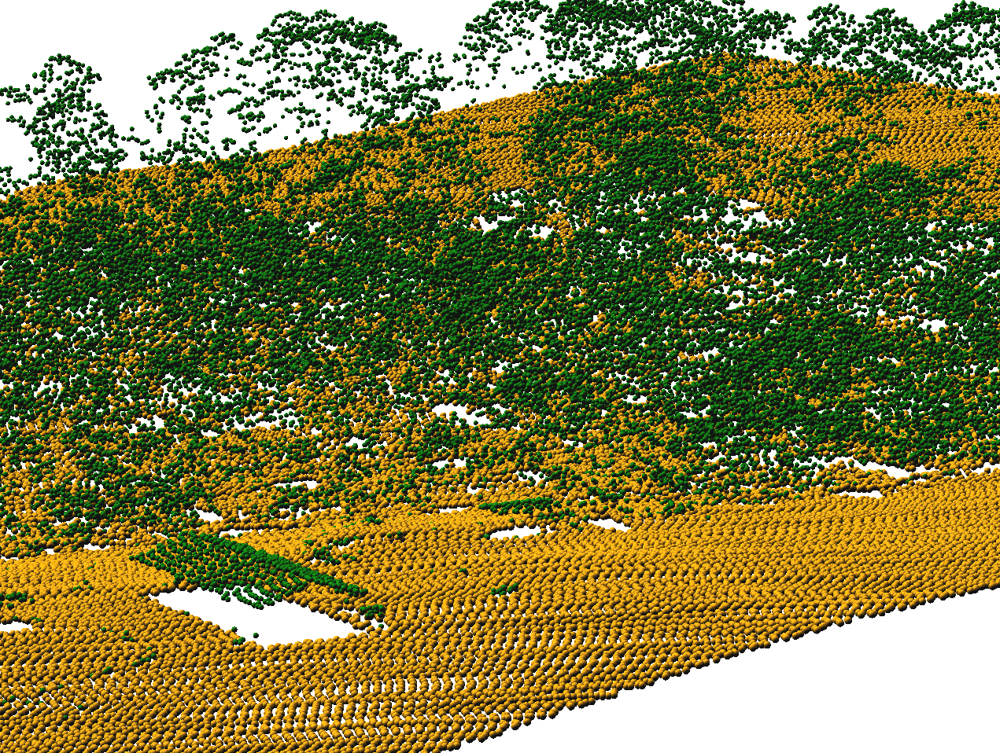
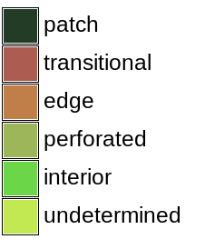
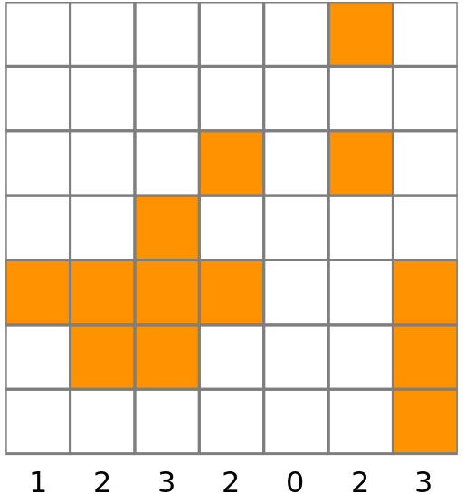

3D rasters are powerful
and you already know how to use them
Vaclav (Vashek) Petras,
Anna Petrasova and Helena Mitasova
NCSU
OSGeoREL
at the
Center for Geospatial Analytics
North Carolina State University
US-IALE, Baltimore
April 9-13, 2017
3D rasters
Usage: soil properties, concentrations in water bodies, properties of air mass, hyperspectral data, analysis of spatio-temporal data, forest and habitat properties, exploration of simulation scenario space
- 3D raster - Voxel space - 3D voxel grid - Voxel model
- [3D] cell - Voxel - 3D voxel unit - Volumetric pixel

Image credit: GRASS Development Team
Series of 2D rasters
- 2D does not explicitly represent and model 3D relationships
- 2D rasters accessible individually
3D raster
- explicit 3D relationships
- unified access to all 3 dimensions
- needs to be sliced to get 2D rasters
Third dimension
- The first two dimensions are the same as in 2D.
- Third dimension can be in space, time, or scenario space.
- Mind the possible anisotropy in the Z direction.
(difference from 2D rasters where all directions are isotropic most of the time)
Working with 3D rasters
Not that different from 2D rasters, images, and matricesPython
- using NumPy array
x = array([[[ 0, 1, 2],
[ 3, 4, 5],
[ 6, 7, 8]],
[[ 9, 10, 11],
[12, 13, 14],
[15, 16, 17]],
[[18, 19, 20],
[21, 22, 23],
[24, 25, 26]]])
x.sum(axis=0)
# array([[27, 30, 33],
# [36, 39, 42],
# [45, 48, 51]])
R
- using array
x = array(1:40, dim=c(2,4,5))
# , , 1
#
# [,1] [,2] [,3] [,4]
# [1,] 1 3 5 7
# [2,] 2 4 6 8
#
# , , 2
# ...
x[2,3,3]
# 22
x[2,3,3] = 0

Octave
- using 3D matrix/array
x = reshape(1:8, 2, 2, 2)
a(2,1,1) = 5
b = 3 * a
# b =
#
# ans(:,:,1) =
#
# 3 9
# 15 12

GRASS GIS
general-purpose geospatial analysis and remote sensing tool
-
data types:
- vectors
- 2D rasters
- 3D rasters
-
container types:
- imagery groups
- series of 2D rasters
- spatio-temporal datasets
- series of 2D rasters (or vectors or 3D rasters)
- imagery groups
Moving window
2D
r.neighbors input=a output=b method=average size=5
r.colors map=b color=viridis
3D
r3.neighbors input=a output=b method=average window=5,5,5
r3.colors map=b color=viridis
3D raster algebra
b = a + 2
b = if(a > 20, 1, null())
b = (a[0,0,-1] + a[0,0,1]) / 2
Visual programming
- graphical modeler
- graphical raster calculator
Example: Terrain evolution
Example: Terrain evolution

 

Image credit: GRASS Development Team
Example: Behavioral patterns
Petrasova
Example: Behavioral patterns
spatio-temporal data representing behavioral patterns of people in urban environment
Petrasova
Example: Vegetation structure
3D vegetation structure derived from lidar point clouds Petras, V., D. J. Newcomb, and H. Mitasova. Generalized 3D fragmentation index derived from lidar point clouds. In: Open Geospatial Data, Software and Standards [in print] 3D version of forest fragmentation index by Riitters et al.
3D index of 3D raster
Point cloud
Binning, moving window & raster algebra
# Bash
r3.in.lidar input=points.las n=count base_raster=ground -d class_filter=3,4,5
r3.neighbors input=count output=average method=average window=3,3,3
r3.mapcalc expression="buffer = if(average > 0, 1, 0)"
Fragmentation index
# Python
import grass.script as gs
gs.run_command("g.extension", extension="r3.forestfrag")
gs.run_command("r3.forestfrag", input="buffer", output="fragmentation")

Profile of 3D raster

Back to 2D
# Bash
r3.count.categories input=fragmentation output=count
g.list type=raster pattern="count_*"
Conclusion
- there is a third dimension
- 3D rasters can handle it
- use the tool you know
- pick the tool closest to what you know
GRASS GIS
grass.osgeo.org
Python
python.org
R
r-project.org
Octave
octave.org